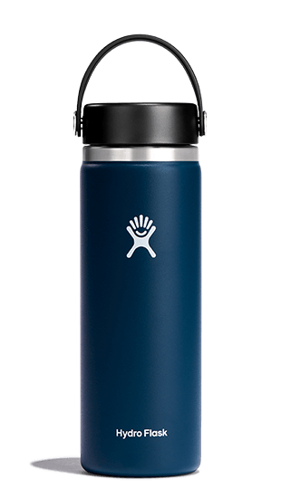
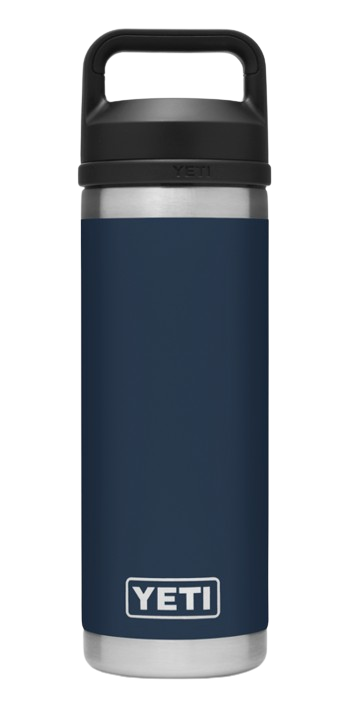

There are alot of problems with garbage in today's world. You should follow the three R's (Reduce, Reuse, Recycle).
Reducethe amount of waste you produce.
Reuseproducts and donate old items instead of throwing them out.
Recycleany materials that you can use for another purpose.
Each year, 8 million tonnes of plastic pollution enter the oceans from land globally. Debris in the ocean is a big threat to marine life.
Marine creatures either ingest or become entangled in plastic and more, and that leads to death or injuries.
It's not just plastic, though. It can be papers, metals and woods. Some electronic devices end up in the ocean as well.
There have been machines created to help with the process of this.
Don't use plastic water bottles, opt for reusable water bottles. Here are some examples.
